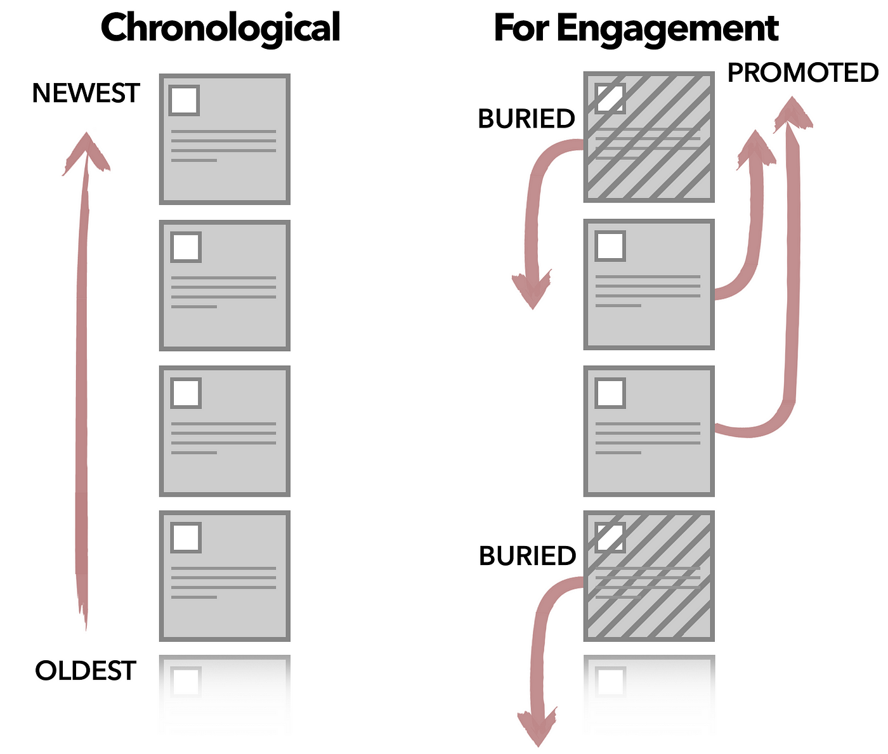

Introduction
About Me
Syed Fahad Sultan سید فہد سلطان
Pronunciation: Saiyyudh Fahad Sool-tahn
Just call me ‚ÄúDr. Sultan‚Äù (click on the speaker for a short audio clip: üîà)

I am originally from Lahore, Pakistan and joined Furman University in Fall 2022 after earning my Ph.D. in Computer Science from State University of New York at Stony Brook.

Fresh out of college, I worked as a professional video game developer for a startup that later got acquired by the Japanese gaming giant DeNA. During this time, I was part of the team that built TapFish, the top-grossing game worldwide, for two weeks in 2011, on both the App Store and Google Play.

|

|

|
|
|
|
I then went on to work at Technology for People Initiative, an applied research lab in my where I mined social media and cell phone data for proxies of socio-economic indicators that allowed more inclusive policy-making for marginalized communities. During these years, I also dabbled in data journalism and helped organize a boot camp on using data for journalists with the support of the International Center for Journalists (ICFJ) and the Knight Foundation.

In 2015, I moved to Mecca, Saudi Arabia to work for the GIS Innovation Center (now Wadi Makkah). There I worked on innovative urban sensing techniques for better crowd control during the annual pilgrimage to the city, the largest human gathering in the world every year.
During my PhD, I worked at the intersection of computational neuroscience, bioinformatics and machine learning. My work focused on identifying neurological and genetic biomarkers linking type-2 diabetes with cognitive disorders such as Alzheimer’s and other dementias.
I live in Travelers Rest with my wife and cat.
How to Reach Me
Office: Riley Hall 200-H
Email: fahad.sultan@furman.edu
I have an Open door policy. I am in my office during work hours most weekdays and my door is only closed if I am in a class or in a meeting. So please drop by.
You can also schedule a meeting using this link if you want to absolutely make sure that I am available.
About the Course
Course website: https://fahadsultan.com/csc223
The Syllabus is available on the course website. In particular, please make sure to read the Grading, Academic Integrity and Textbook and other Resources sections carefully.
All of the course content will be posted on this website.
Important announcements will be made on both the course website homepage and in class.
You are to submit assignments and exams on the course Moodle page. I will also upload all of your grades there.
How-to knowledge > What-is knowledge

Declarative knowledge is knowledge about facts. It is knowledge that answers the “What is” questions. Most courses outside Computer Science are about declarative knowledge.
In contrast, Imperative knowledge is knowledge about how to do things. It is knowledge that answers the “How to” questions.
While we will spend a non-trivial amount of time in this course on declarative knowledge, the overwhelming majority of this course will focus on imperative knowledge. Your grade in this course will be determined by your ability to apply declarative and more importantly imperative knowledge to solve problems.

Research shows that there is only one way to acquire imperative knowledge: Practice, Practice, Practice !. Practice combined with feedback is the only way to achieve mastery.
In this course, you will be given ample opportunities to practice along with regular feedback.
Assignments
Approach assignments purely as opportunities to learn, prepare for exams and to prepare for your career.

It is not worth cheating on assignments. Just come talk to me if you are struggling with an assignment. I will literally just tell you the answer.
Written Assignments:
Written assignments are to help you build a deeper understanding of algorithms and math covered in class.
These could simply be math problems or involve tracing algorithms and dry-runs.
Both handwritten or typed submissions are acceptable. Submissions on Moodle.
You should expect questions in the exams similar to assignments.
Programming Assignments:
Programming assignments are going to be posted at the start of the lab session each week and will be due by the start of the next lab session, unless otherwise specified.
Class Participation
Class Participation is 5% of your grade.
Class Participation is not just about attendance. It is about being engaged in the class.
Engagement is the key to learning.
Ask questions, answer questions, participate in discussions.
Given the glut of information accessible online and otherwise in this day and age, meaningful interactions with your peers and teachers is essentially why you are paying your college tuition.
The only reason you are paying such a high tuition is to have access to the collective knowledge and wisdom of your professors and peers.
Otherwise, you could just watch YouTube videos and read books on your own.
Professionalism
Professionalism is 5% of your grade.
Professionalism is about how you conduct yourself in the class.
This includes, but is not limited to:
- Respect and Courtesy: Being respectful and courteous to your peers and your instructor.
- Punctuality: Being on time for class and for assignments.
- Communication: Communicating clearly and effectively with your peers and your instructor.
Exams
There will be three exams in the course, including the final. The final exam will be cumulative. Exams constitute 60% of your course grade.
You will be evaluated on your ability to apply knowledge to new problems and not just on your ability to retain and recall information.
The exams, more than the assignments, are going to determine your grade.
All exams are going to be cumulative, with focus on the topics covered since last exam.
Diligent work on the homework and assignments will be rewarded here.
Giant Asterisk *
Everything is tentative and subject to change

This is my first teaching this course. Any and all feedback is welcome!
I have created an anonymous feedback poll on Moodle. Please use this to anonymously share any feedback.
Share any changes you want me to make in the course, at any point in the semester. You can submit multiple times over the span of the semester.
Think of it as a Complaints Box for the course.
❌ Data Structures & Algorithms
✅ Complexity, Abstraction and Scalability
The course is called Data Structures & Algorithms. In my opinion, a more appropriate name for the course would have been Complexities, Abstractions and Scalability.
Complexity is the primary challenge we will be dealing with in this course. Abstractions are going to be our primary tool to deal with complexity. Scalability is the primary goal in this course i.e. to write code that can handle the data we have today and the data we expect to have in the future.
In the world of software development, lines of code (LOC) are often used as a metric to measure the size and complexity of a codebase. The more lines of code a project has, the larger and more intricate it is likely to be.
How many millions of lines of code does it take to make the modern program, web service, car, or airplane possible? The figure below sheds some light on this question.

The range is extraordinary: the average iPhone app has less than 50,000 lines of code, while Google’s entire code base is two billion lines for all services. The code needed for fighter jets, popular video game engines, and even the Large Hadron Collider falls somewhere in between the two. It’s been said that the modern smartphone has more lines of code than a passenger jet – and that the code for a typical car has 100 million lines of code.
In fact, the lines of code for the Apollo 11 moon lander totaled just 145,000 – and the code for the Space Shuttle was about the same.
It’s more than what was needed to run old technologies like the Space Shuttle, a pacemaker, or even the game engine of Quake 3 – but it’s not enough to be the driving force behind the modern software that’s used in everyday life today.

A million lines of code, if printed, would be about 18,000 pages of text. That’s 14x the length of War and Peace.
How do we then manage this complexity? A large part of the answer lies in Abstractions. Abstractions are ways of dividing a complex system into smaller, more manageable pieces. Each piece is a black box or module that can be used without having to know how it works internally. However, the pieces are not completely opaque. They have a well-defined interface that allows us to use them without knowing how they work internally.
On the other hand, the amount of Data that we have to deal with is growing exponentially. Approximately 328.77 million terabytes of data are created each day.

Here’s a selection of other user-generated internet content stats:
| Type of Media | Amount per Minute | Amount per Day |
|---|---|---|
| Emails sent | 231.4 million | 333.22 billion |
| Texts sent | 16 million | 24.04 billion |
| Google searches | 5.9 million | 8.5 billion |
| Snaps shared on Snapchat | 2.43 million | 3.5 billion |
| Pieces of content shared on Facebook | 1.7 million | 2.45 billion |
| Swipes on Tinder | 1.1 million | 1.58 billion |
| Hours streamed | 1 million | 1.44 billion |
| USD spent on Amazon | 443,000 | 637.92 million |
| USD sent on Venmo | 437,600 | 630.14 million |
| Tweets shared on Twitter | 347,200 | 499.97 million |
| Hours spent in Zoom meetings | 104,600 | 150.62 million |
| USD spent on DoorDash | 76,400 | 110.02 million |
For the software engineer this means writing code that can not only handle the data we have today, but also data that we expect to have in the future. In other words, we need to write code that is scalable.
Six Problems of Interest
A LOT of problems in computer science can be ‘reduced’ to a very small set of fundamental problems.
In this course, we are going to focus on the six of such fundamental problems.
- Search : Given a set of data, find a particular element in the set
- Sort : Given a set of data, arrange the elements in a particular order
3-6. Create, Read, Update, Delete (CRUD)
1. Search
We are concerned with the process of collecting information in a computer’s memory, in such a way that the information can subsequently be recovered as quickly as possible.

In this course, we are going to focus on the simplest form of search: searching for a single element in a set of data i.e. how to find the data that has been stored with a given identification. For example, in a numerical application we might want to find \(f(x)\), given \(x\) and a table of the values of \(f\); in a nonnumerical application, we might want to find the English translation of a given Russian word.
In general, we shall suppose that a set of \(N\) records has been stored, and the problem is to locate the appropriate one. As in the case of sorting, we assume that each record includes a special field called its key; this terminology is especially appropriate, because many people spend a great deal of time every day searching for their keys. We generally require the \(N\) keys to be distinct, so that each key uniquely identifies its record. Algorithms for searching are presented with a so-called argument, \(q\), and the problem is to find which record has \(q\) as its key.
After the search is complete, two possibilities can arise:
- Either the search was successful, having located the unique record containing \(q\); or
- It was unsuccessful, having determined that \(q\) is nowhere to be found.
Formally, the search problem is defined as follows:
Problem: \(\textbf{Search}\)
Input: A set of \(n\) keys \(S\), and a query key \(q\).
Required Output: The location of \(q\) in \(S\), if present, else \(-1\).
Searching is the most time-consuming part of many programs, and the substitution of a good search method for a bad one often leads to a substantial increase in speed. In fact we can often arrange the data or the data structure so that searching is eliminated entirely, by ensuring that we always know just where to find the information we need.
Efficient algorithms for searching turn out to be quite important in practice.
2. Sort
Typical computer science students study the basic sorting algorithms at least three times before they graduate: first in introductory programming, then in data structures, and finally in an advanced algorithms course.

Why is sorting worth so much attention? There are several reasons:
Sorting is the basic building block that many other algorithms are built around. By understanding sorting, we obtain an amazing amount of power to solve other problems.
Most of the interesting ideas used in the design of algorithms appear in the context of sorting, such as divide-and-conquer, data structures, and randomized algorithms.
Computers have historically spent more time sorting than doing anything else. Research shows that a quarter of all computer cycles were spent sorting data [Knu98]. Sorting remains the most ubiquitous combinatorial algorithm problem in practice.
Sorting is the most thoroughly studied problem in computer science. Literally dozens of different algorithms are known, most of which possess some particular advantage over all other algorithms in certain situations.
Formally, the sorting problem is defined as follows:
Problem: \(\textbf{Sorting}\)
Input: A sequence of \(n\) numbers \(a_1, a_2, \dots, a_n\).
Required Output: A permutation (reordering) \(a_1', a_2', \dots, a_n'\) of the input sequence such that \(a_1' \leq a_2' \leq \dots \leq a_n'\).
In this course, we will discuss sorting in reasonable detail, stressing how sorting can be applied to solving other problems. We will also also sorting as a way to introduce paradigms of algorithm design and analysis.
3-6. Create, Read, Update, Delete (CRUD)
Create: Adding a record to a database, inserting a node into a linked list, and inserting an element into a priority queue are all examples of the insert problem. Other names of this problem include: Insert, Add, Post

Read: Reading or accessing data is the most fundamental problem in computer science. Other names of this problem include: Access, Get, Fetch, Retrieve
Update: For each of the following problems, we are given a set of N records, each record containing a key and some associated data, and we are given a particular key K. The problem is to modify the record containing K in some way. Other names of this problem include: Modify, Edit, Patch
Delete: Deleting a record from a database, deleting a node from a linked list, and deleting an element from a priority queue are all examples of the delete problem. Other names of this problem include: Remove, Drop
Non-Linear Data Structures
In this course, we will also study non-linear data structures.
Non-linear data structures are those in which each data element can connect to more than two other data elements.
Examples of non-linear data structures include trees and graphs.
Trees are a special type of graph, and have a hierarchical structure. Trees are used to represent the hierarchical relationships between data elements.
Examples of applications of trees in computer science include the representation of file systems and the structure of many data formats such as JSON, XML and HTML.

Graphs are used to represent relationships between data elements that are not hierarchical.
Examples of applications of graphs in computer science include the representation of social networks, the representation of the internet, and the representation of the structure of a computer network.

P vs. NP
The P vs. NP problem is one of the seven Millennium Prize Problems. It asks whether every problem whose solution can be quickly verified by a computer can also be quickly solved by a computer.

The P vs. NP problem is one of the most important unsolved problems in computer science. It is also one of the most famous problems in computer science.
The P vs. NP problem is important because it has many practical implications. If P = NP, then many problems that are currently thought to be hard would become easy. For example, many problems in cryptography would become easy to solve.

The P problems are the problems that can be solved in polynomial time.
The NP problems are the problems that can be verified in polynomial time but as of yet, cannot be solved in polynomial time.
Traveling Salesman Problem
The traveling salesman problem is a problem in combinatorial optimization. It asks for the shortest possible route that visits each city exactly once and returns to the starting city.

The traveling salesman problem is one of the most important problems in computer science. It is used in many applications, such as vehicle routing, logistics, and manufacturing.
Other famous NP-complete problems include the Traveling Salesman Problem, the Knapsack Problem, and the Graph Coloring Problem.